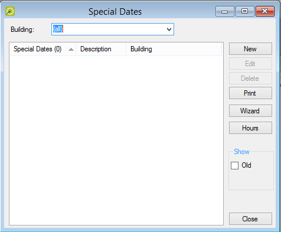
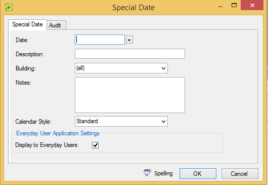
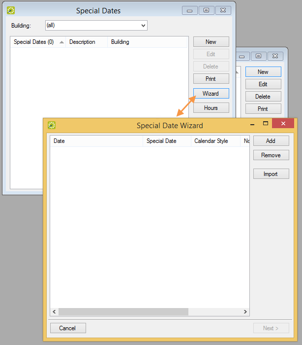
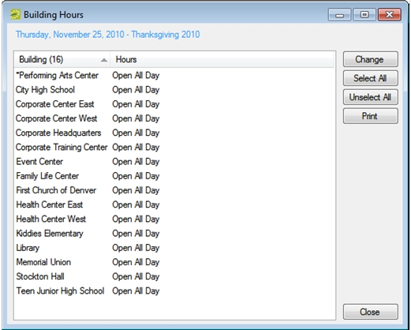
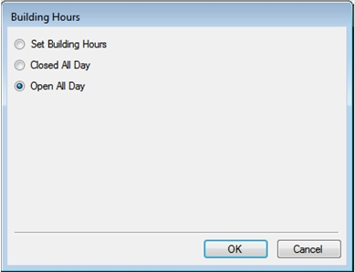

Special Dates are days that have special significance for your organization, for example, New Year’s Day, Spring Break, Staff Retreat, and so on. Special Dates are displayed in various places throughout your EMS system. The special date designation is for informational purposes only and unless you specifically close the date to your users, your users are not prevented from making reservations or booking rooms on a special date or holiday.
This topic will provide information on the following:
You must configure your organization’s Special Dates each calendar year.
You can configure Special Dates on an individual basis; you can configure multiple Special Dates; or you can use a wizard to import a list of Special Dates in a single step. Optionally, after you configure or import a list of Special Dates, you can configure the hours for the buildings that are affected by the special date or holiday.
By default, buildings are configured to be “Open All Day.” You can configure the hours for a building so that the building is open for only a specific time period on the special date or holiday or the building is closed for the entire special date or holiday.
To open the Special Dates configuration window to view special dates and holidays, follow these steps:

Special Dates Window
To configure a single special date or holiday, follow these steps:

Special Date Dialog Box
|
Field |
Description |
|---|---|
|
Date |
The date for the special date or holiday. |
|
Description |
The description or name of the special date or holiday. The description can be a maximum of 50 characters, including spaces. |
|
Building |
Select the building to which the special date or holiday applies. (The default value is all buildings.) |
|
Notes |
Any special notes or information about the special date or holiday. |
|
Calendar Style |
Select the print characteristics for the special date or holiday on the event schedule. |
|
|
|
|
Display to Everyday Users |
Clear this option if you do not want the special date or holiday description to be displayed in |
To configure multiple special dates or holidays, follow these steps:

Special Date Wizard
|
Field |
Description |
|---|---|
|
Date |
The date for the special date or holiday. |
|
Description |
The description or name of the special date or holiday. The description can be a maximum of 50 characters, including spaces. |
|
Calendar Style |
Select the print characteristics for the special date or holiday on the event schedule. See Also: Configuring Calendar Styles. |
|
Notes |
Any special notes or information about the special date or holiday. |
If you use the wizard to import a list of multiple Special Dates, you can set the values only for the special date or holiday date, description, and notes. You cannot specify the calendar style, enter notes for the special date or holiday, or indicate that the special date or holiday is not to be displayed in
To import a list of special dates or holidays, follow these steps:
Each special date or holiday must be a separate line entry. To see the required format for the tab-delimited file, on the Special Dates window, click Print > Import Format. See Also: Special Date Import File Specifications.
To configure building hours for a special date or holiday, follow these steps:

Building Hours Window

Building Hours Dialog Box
|
Option |
Description |
|---|---|
|
Set Building Hours |
Select this option to specify the time period (Open and Close) during which the building is to remain open for the special date or holiday. Your EMS users can make reservations on this date in the selected buildings even if the events are scheduled outside the indicated time period. They merely receive a warning that the reservation time exceeds building hours. |
|
Closed All Day |
Select this option to close the building for the entire special date or holiday period. When you select this option, then a Web Only option is displayed on the Building Hours dialog box.
|
|
Open All Day |
The default value. Leave this option selected to have the building remain open for the entire special date or holiday. |